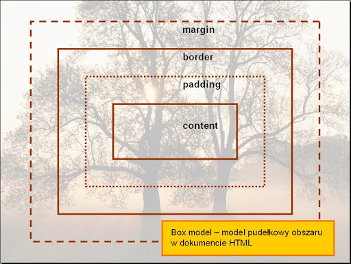

Każdy element w dokumencie HTML, otacza się prostokątnym obszarem zwanym pudełkiem (ang. Box model).
zawartość |
Opis |
| content | zawartość elementu (np.: tekst, obrazek) |
| padding | otaczające marginesy wewnętrzne, odstęp między obramowaniem i zawartością elementu |
| border | obramowania wokół zawartości elementu, ma styl i kolor |
| margin | marginesy wokół ramki (margines zewnętrzny). Jest to pusty obszar wokół ramki, który nie ma koloru tła i jest przeźroczysty |
-
Uwaga 1
- Padding, border i margin mogą mieć zerową wartość Uwaga 2
- Tło elementu jest określone dla wszystkich z podanych powyżej obszarów z wyjątkiem marginesów zewnętrznych, które zawsze są przezroczyste (transparent).
